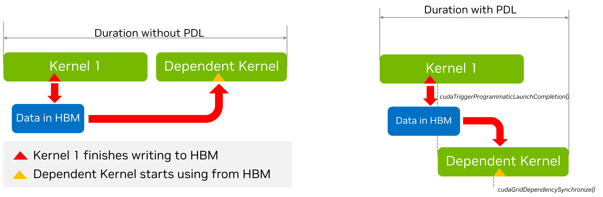

3.1. 高级 CUDA API 与特性#
本节介绍更高级的 CUDA API 与特性。这些主题通常不需要修改 CUDA 内核代码，但仍可从主机侧影响应用层行为，包括 GPU 工作的执行与性能，以及 CPU 侧性能。
3.1.1. cudaLaunchKernelEx#
当最初版本引入三重尖括号语法时，内核的执行配置仅有四个可编程参数： - 线程块维度 - 网格维度 - 动态共享内存（可选，未指定时为 0） - 流（未指定时使用默认流）
某些 CUDA 特性可受益于内核启动时提供的额外属性与提示。cudaLaunchKernelEx 允许程序通过 cudaLaunchConfig_t 结构设置上述执行配置参数。此外，cudaLaunchConfig_t 还允许传入 0 个或多个 cudaLaunchAttributes，用于控制或建议其他启动参数。例如，本章稍后讨论的 cudaLaunchAttributePreferredSharedMemoryCarveout（见配置 L1/共享内存平衡）就是通过 cudaLaunchKernelEx 指定的。本章后文还会介绍 cudaLaunchAttributeClusterDimension 属性，用于指定期望的集群大小。
The complete list of supported attributes and their meaning is captured in the CUDA Runtime API Reference Documentation.
3.1.2. 启动集群：#
Thread block clusters, introduced in previous sections, are an optional level of thread block organization available in compute capability 9.0 and higher which enable applications to guarantee that thread blocks of a cluster are simultaneously executed on single GPC. This enables larger groups of threads than those that fit in a single SM to exchange data and synchronize with each other.
Section Section 2.1.10.1 showed how a kernel which uses clusters can be specified and launched using triple chevron notation. In this section, the __cluster_dims__ annotation was used to specify the dimensions of the cluster which must be used to launch the kernel. When using triple chevron notation, the size of the clusters is determined implicitly.
3.1.2.1. 使用 cudaLaunchKernelEx 启动集群#
Unlike launching kernels using clusters with triple chevron notation, the size of the thread block cluster can be configured on a per-launch basis. The code example below shows how to launch a cluster kernel using cudaLaunchKernelEx.
// Kernel definition
// No compile time attribute attached to the kernel
__global__ void cluster_kernel(float *input, float* output)
{
}
int main()
{
float *input, *output;
dim3 threadsPerBlock(16, 16);
dim3 numBlocks(N / threadsPerBlock.x, N / threadsPerBlock.y);
// Kernel invocation with runtime cluster size
{
cudaLaunchConfig_t config = {0};
// The grid dimension is not affected by cluster launch, and is still enumerated
// using number of blocks.
// The grid dimension should be a multiple of cluster size.
config.gridDim = numBlocks;
config.blockDim = threadsPerBlock;
cudaLaunchAttribute attribute[1];
attribute[0].id = cudaLaunchAttributeClusterDimension;
attribute[0].val.clusterDim.x = 2; // Cluster size in X-dimension
attribute[0].val.clusterDim.y = 1;
attribute[0].val.clusterDim.z = 1;
config.attrs = attribute;
config.numAttrs = 1;
cudaLaunchKernelEx(&config, cluster_kernel, input, output);
}
}
There are two cudaLaunchAttribute types which are relevant to thread block clusters clusters: cudaLaunchAttributeClusterDimension and cudaLaunchAttributePreferredClusterDimension.
The attribute id cudaLaunchAttributeClusterDimension specifies the required dimensions with which to execute the cluster. The value for this attribute, clusterDim, is a 3-dimensional value. The corresponding dimensions of the grid (x, y, and z) must be divisible by the respective dimensions of the specified cluster dimension. Setting this is similar to using the __cluster_dims__ attribute on the kernel definition at compile time as shown in Launching with Clusters in Triple Chevron Notation, but can be changed at runtime for different launches of the same kernel.
On GPUs with compute capability of 10.0 and higher, another attribute id cudaLaunchAttributePreferredClusterDimension allows the application to additionally specify a preferred dimension for the cluster. The preferred dimension must be an integer multiple of the minimum cluster dimensions specified by the __cluster_dims__ attribute on the kernel or the cudaLaunchAttributeClusterDimension attribute to cudaLaunchKernelEx. That is, a minimum cluster dimension must be specified in addition to the preferred cluster dimension. The corresponding dimensions of the grid (x, y, and z) must be divisible by the respective dimension of the specified preferred cluster dimension.
All thread blocks will execute in clusters of at least the minimum cluster dimension. Where possible, clusters of the preferred dimension will be used, but not all clusters are guaranteed to execute with the preferred dimensions. All thread blocks will execute in clusters with either the minimum or preferred cluster dimension. Kernels which use a preferred cluster dimension must be written to operate correctly in either the minimum or the preferred cluster dimension.
3.1.2.2. 将线程块视为集群#
When a kernel is defined with the __cluster_dims__ annotation, the number of clusters in the grid is implicit and can be calculated from the size of the grid divided into the specified cluster size.
__cluster_dims__((2, 2, 2)) __global__ void foo();
// 8x8x8 clusters each with 2x2x2 thread blocks.
foo<<<dim3(16, 16, 16), dim3(1024, 1, 1)>>>();
In the above example, the kernel is launched as a grid of 16x16x16 thread blocks, which means a grid of of 8x8x8 clusters is used.
A kernel can alternatively use the __block_size__ annotation, which specifies both the required block size and cluster size at the time the kernel is defined. When this annotation is used, the triple chevron launch becomes the grid dimension in terms of clusters rather than thread blocks, as shown below.
// Implementation detail of how many threads per block and blocks per cluster
// is handled as an attribute of the kernel.
__block_size__((1024, 1, 1), (2, 2, 2)) __global__ void foo();
// 8x8x8 clusters.
foo<<<dim3(8, 8, 8)>>>();
__block_size__ requires two fields each being a tuple of 3 elements. The first tuple denotes block dimension and second cluster size. The second tuple is assumed to be (1,1,1) if it’s not passed. To specify the stream, one must pass 1 and 0 as the second and third arguments within <<<>>> and lastly the stream. Passing other values would lead to undefined behavior.
Note that it is illegal for the second tuple of __block_size__ and __cluster_dims__ to be specified at the same time. It’s also illegal to use __block_size__ with an empty __cluster_dims__. When the second tuple of __block_size__ is specified, it implies the “将线程块视为集群” being enabled and the compiler would recognize the first argument inside <<<>>> as the number of clusters instead of thread blocks.
3.1.3. 关于流与事件的更多内容#
CUDA Streams introduced the basics of CUDA streams. By default, operations submitted on a given CUDA stream are serialized: one cannot start executing until the previous one has completed. The only exception is the recently added Programmatic Dependent Launch and Synchronization feature. Having multiple CUDA streams is a way to enable concurrent execution; another way is using CUDA Graphs. The two approaches can also be combined.
Work submitted on different CUDA streams may execute concurrently under specific circumstances, e.g., if there are no event dependencies, if there is no implicit synchronization, if there are sufficient resources, etc.
Independent operations from different CUDA streams cannot run concurrently if any CUDA operation on the NULL stream is submitted in between them, unless the streams are non-blocking CUDA streams. These are streams created with cudaStreamCreateWithFlags() runtime API with the cudaStreamNonBlocking flag. To improve potential for concurrent GPU work execution, it is recommended that the user creates non-blocking CUDA streams.
It is also recommended that the user selects the least general synchronization option that is sufficient for their problem.
For example, if the requirement is for the CPU to wait (block) for all work on a specific CUDA stream to complete,
using cudaStreamSynchronize() for that stream would be preferable to cudaDeviceSynchronize(), as the latter would unnecessarily wait for GPU work on all CUDA streams of the device to complete.
And if the requirement is for the CPU to wait without blocking, then using cudaStreamQuery() and checking its return value, in a polling loop, may be preferable.
A similar synchronization effect can also be achieved with CUDA events (CUDA Events), e.g., by recording an event on that stream and calling
cudaEventSynchronize() to wait, in a blocking manner, for the work captured in that event to complete.
Again, this would be preferable and more focused than using cudaDeviceSynchronize().
Calling cudaEventQuery() and checking its return value, e.g., in a polling loop, would be a non-blocking alternative.
The choice of the explicit synchronization method is particularly important if this operation happens in the application’s critical path. Table 4 provides a high-level summary of various synchronization options with the host.
Wait for specific stream |
Wait for specific event |
Wait for everything on the device |
|
|---|---|---|---|
Non-blocking (would need a polling loop) |
cudaStreamQuery() |
cudaEventQuery() |
N/A |
Blocking |
cudaStreamSynchronize() |
cudaEventSynchronize() |
cudaDeviceSynchronize() |
For synchronization, i.e., to express dependencies, between CUDA streams, use of non-timing CUDA events is recommended, as described in CUDA Events.
A user can call cudaStreamWaitEvent() to force future submitted operations on a specific stream to wait for the completion of a previously recorded event (e.g., on another stream).
Note that for any CUDA API waiting or querying an event, it is the responsibility of the user to ensure the cudaEventRecord API has been already called,
as a non-recorded event will always return success.
CUDA events carry, by default, timing information, as they can be used in cudaEventElapsedTime() API calls.
However, a CUDA event that is solely used to express dependencies across streams does not need timing information.
For such cases, it is recommended to create events with timing information disabled for improved performance. This is possible using cudaEventCreateWithFlags() API
with the cudaEventDisableTiming flag.
3.1.3.1. 流优先级#
The relative priorities of streams can be specified at creation time using cudaStreamCreateWithPriority(). The range of allowable priorities, ordered as [greatest priority, least priority] can be obtained using the cudaDeviceGetStreamPriorityRange() function. At runtime, the GPU scheduler utilizes stream priorities to determine task execution order, but these priorities serve as hints rather than guarantees. When selecting work to launch, pending tasks in higher-priority streams take precedence over those in lower-priority streams. Higher-priority tasks do not preempt already running lower-priority tasks. The GPU does not reassess work queues during task execution, and increasing a stream’s priority will not interrupt ongoing work. Stream priorities influence task execution without enforcing strict ordering, so users can leverage stream priorities to influence task execution without relying on strict ordering guarantees.
The following code sample obtains the allowable range of priorities for the current device, and creates two non-blocking CUDA streams with the highest and lowest available priorities.
// get the range of stream priorities for this device
int leastPriority, greatestPriority;
cudaDeviceGetStreamPriorityRange(&leastPriority, &greatestPriority);
// create streams with highest and lowest available priorities
cudaStream_t st_high, st_low;
cudaStreamCreateWithPriority(&st_high, cudaStreamNonBlocking, greatestPriority));
cudaStreamCreateWithPriority(&st_low, cudaStreamNonBlocking, leastPriority);
3.1.3.2. 显式同步#
As previously outlined, there are a number of ways that streams can synchronize with other streams. The following provides common methods at different levels of granularity:
- cudaDeviceSynchronize() waits until all preceding commands in all streams of all host threads have completed.
- cudaStreamSynchronize()takes a stream as a parameter and waits until all preceding commands in the given stream have completed. It can be used to synchronize the host with a specific stream, allowing other streams to continue executing on the device.
- cudaStreamWaitEvent()takes a stream and an event as parameters (see CUDA Events for a description of events) and makes all the commands added to the given stream after the call to cudaStreamWaitEvent()delay their execution until the given event has completed.
- cudaStreamQuery()provides applications with a way to know if all preceding commands in a stream have completed.
3.1.3.3. 隐式同步#
Two commands from different streams cannot run concurrently if any one of the following operations is issued in-between them by the host thread:
a page-locked host memory allocation
a device memory allocation
a device memory set
a memory copy between two addresses to the same device memory
any CUDA command to the NULL stream
a switch between the L1/shared memory configurations
Operations that require a dependency check include any other commands within the same stream as the launch being checked
and any call to cudaStreamQuery() on that stream. Therefore, applications should follow these guidelines to improve
their potential for concurrent kernel execution:
All independent operations should be issued before dependent operations,
Synchronization of any kind should be delayed as long as possible.
3.1.4. 编程式依赖内核启动#
As we have discussed earlier, the semantics of CUDA Streams are such that kernels execute in order. This is so that if we have two successive kernels, where the second kernel depends on results from the first one, the programmer can be safe in the knowledge that by the time the second kernel starts executing the dependent data will be available. However, it may be the case that the first kernel can have the data on which a subsequent kernel depends already written to global memory and it still has more work to do. Likewise the dependent second kernel may have some independent work before it needs the data from the first kernel. In such a situation it is possible to partially overlap the execution of the two kernels (assuming that hardware resources are available). The overlapping can also overlap the launch overheads of the second kernel too. Other than the availability of hardware resources,the degree of overlap which can be achieved is dependent on the specific structure of the kernels, such as
when in its execution does the first kernel finish the work on which the second kernel depends?
when in its execution does the second kernel start working on the data from the first kernel?
since this is very much dependent on the specific kernels in question it is difficult to automate completely and hence CUDA provides a mechanism to allow the application developer to specify the synchronization point between the two kernels. This is done via a technique known as 编程式依赖内核启动. The situation is depicted in the figure below.
{kind=link}

PDL has three main components.
The first kernel (the so called primary kernel) needs to call a special function to indicate that it is done with the everything that the subsequent dependent kernels (also called secondary kernel) will need. This is done by calling the function
cudaTriggerProgrammaticLaunchCompletion().In turn, the dependent secondary kernel needs to indicate that it has reached the portion of the its work which is independent of the primary kernel and that it is now waiting on the primary kernel to finish the work on which it depends. This is done with the function
cudaGridDependencySynchronize().THe second kernel needs to be launched with a special attribute cudaLaunchAttributeProgrammaticStreamSerialization with its programmaticStreamSerializationAllowed field set to ‘1’.
The following code snippet shows an example of how this can be done.
__global__ void primary_kernel() {
// Initial work that should finish before starting secondary kernel
// Trigger the secondary kernel
cudaTriggerProgrammaticLaunchCompletion();
// Work that can coincide with the secondary kernel
}
__global__ void secondary_kernel()
{
// Initialization, Independent work, etc.
// Will block until all primary kernels the secondary kernel is dependent on have
// completed and flushed results to global memory
cudaGridDependencySynchronize();
// Dependent work
}
// Launch the secondary kernel with the special attribute
// Set Up the attribute
cudaLaunchAttribute attribute[1];
attribute[0].id = cudaLaunchAttributeProgrammaticStreamSerialization;
attribute[0].val.programmaticStreamSerializationAllowed = 1;
// Set the attribute in a kernel launch configuration
cudaLaunchConfig_t config = {0};
// Base launch configuration
config.gridDim = grid_dim;
config.blockDim = block_dim;
config.dynamicSmemBytes= 0;
config.stream = stream;
// Add special attribute for PDL
config.attrs = attribute;
config.numAttrs = 1;
// Launch primary kernel
primary_kernel<<<grid_dim, block_dim, 0, stream>>>();
// Launch secondary (dependent) kernel using the configuration with
// the attribute
cudaLaunchKernelEx(&config, secondary_kernel);
3.1.5. Batched Memory Transfers#
A common pattern in CUDA development is to use a technique of batching. By batching we loosely mean that we have several (typically small)tasks grouped together into a single (typically bigger) operation. The components of the batch do not necessarily all have to be identical although they often are. An example of this idea is the batch matrix multiplication operation provided by cuBLAS.
Generally as with CUDA Graphs, and PDL, the purpose of batching is to reduce overheads associated with dispatching the individual batch tasks separately. In terms of memory transfers launching a memory transfer can incur some CPU and driver overheads. Further, the regular cudaMemcpyAsync() function in its current form does not necessarily provide enough information for the driver to optimize the transfer, for example, in terms of hints about the source and destination. On Tegra platforms one has the choice of using SMs or Copy Engines (CEs)o perform transfers. The choice of which is currently specified by a heuristic in the driver. This can be important because using the SMs may result in a faster transfer, however it ties down some of the available compute power. On the other hand, using the CEs may result in a slower transfer but overall higher application performance, since it leaves the SMs free to perform other work.
These considerations motivated the design of the cudaMemcpyBatchAsync() function (and its relative cudaMemcpyBatch3DAsync()). These functions allow batched memory transfers to be optimized. Apart from the lists of source and destination pointers, the API uses memory copy attributes to specify expectations of orderings, with hints for source and destination locations, as well as for whether one prefers to overlap the transfer with compute (something that is currently only supported on Tegra platforms with CEs).
Let us first consider the simplest case of a simple batch transfer of data from pinned host memory to pinned device memory
std::vector<void *> srcs(batch_size);
std::vector<void *> dsts(batch_size);
std::vector<void *> sizes(batch_size);
// Allocate the source and destination buffers
// initialize with the stream number
for (size_t i = 0; i < batch_size; i++) {
cudaMallocHost(&srcs[i], sizes[i]);
cudaMalloc(&dsts[i], sizes[i]);
cudaMemsetAsync(srcs[i], sizes[i], stream);
}
// Setup attributes for this batch of copies
cudaMemcpyAttributes attrs = {};
attrs.srcAccessOrder = cudaMemcpySrcAccessOrderStream;
// All copies in the batch have same copy attributes.
size_t attrsIdxs = 0; // Index of the attributes
// Launch the batched memory transfer
cudaMemcpyBatchAsync(&dsts[0], &srcs[0], &sizes[0], batch_size,
&attrs, &attrsIdxs, 1 /*numAttrs*/, nullptr /*failIdx*/, stream);
The first few parameters to the cudaMemcpyBatchAsync() function seem immediately sensible. The are comprised of arrays containing the source and destination pointers, as well as the transfer sizes. Each array has to have``batch_size`` elements. The new information comes from the attributes. The function needs a pointer to an array of attributes, and a corresponding array of attribute indices. In principle it is also possible to pass an array of size_t and in this array the indices of an failed transfers can be recorded, however it is safe to pass a nullptr here, in this case the indices of failures will simply not be recorded.
Turning to the attributes, in this instance the transfers are homogeneous. So we use only one attribute, which will apply to
all the transfers. This is controlled by the attrIndex parameter. In principle this can be an array. Element i of the array contains the index of the first transfer to which the i-th element of the attribute array applies. In this case, attrIndex is treated as a single element array, with the value ‘0’ meaning that attribute[0] will apply to all transfers with index 0 and up, in other words all the transfers.
Finally, we note that we have set the srcAccessOrder attribute to cudaMemcpySrcAccessOrderStream. This means that the source data will be accessed in regular stream order. In other words, the memcpy will block until previous kernels dealing with the data from any of these source and destination pointers are completed.
In the next example we will consider a more complex case of a heterogeneous batch transfer.
std::vector<void *> srcs(batch_size);
std::vector<void *> dsts(batch_size);
std::vector<void *> sizes(batch_size);
// Allocate the src and dst buffers
for (size_t i = 0; i < batch_size - 10; i++) {
cudaMallocHost(&srcs[i], sizes[i]);
cudaMalloc(&dsts[i], sizes[i]);
}
int buffer[10];
for (size_t i = batch_size - 10; i < batch_size; i++) {
srcs[i] = &buffer[10 - (batch_size - i];
cudaMalloc(&dsts[i], sizes[i]);
}
// Setup attributes for this batch of copies
cudaMemcpyAttributes attrs[2] = {};
attrs[0].srcAccessOrder = cudaMemcpySrcAccessOrderStream;
attrs[1].srcAccessOrder = cudaMemcpySrcAccessOrderDuringApiCall;
size_t attrsIdxs[2];
attrsIdxs[0] = 0;
attrsIdxs[1] = batch_size - 10;
// Launch the batched memory transfer
cudaMemcpyBatchAsync(&dsts[0], &srcs[0], &sizes[0], batch_size,
&attrs, &attrsIdxs, 2 /*numAttrs*/, nullptr /*failIdx*/, stream);
Here we have two kinds of transfers: batch_size-10 transfer from pinned host memory to pinned device memory,
and 10 transfers from a host array to pinned device memory. Further, the buffer array is not only on the host but is only in existence in the current scope – its address is what is known as an ephemeral pointer. This pointer may not be valid after the API call completes (it is asynchronous). To perform the copies with such ephemeral pointers, the srcAccessOrder in the attribute must be set to cudaMemcpySrcAccessOrderDuringApiCall.
We now have two attributes, the first one applies to all transfers with indices starting at 0, and less than batch_size-10. The second one applies to all transfers with indices starting at batch_size-10 and less than batch_size.
If instead of allocating the buffer array from the stack, we had allocated it from the heap using malloc the data would not be ephemeral any more. It would be valid until the pointer was explicitly freed. In such a case the best option for how to stage the copies would depend on whether the system had hardware managed memory or coherent GPU access to host memory via address translation in which case it would be best to use stream ordering, or whether it did not in which case staging the transfers immediately would make most sense. In this situation, one should use the value cudaMemcpyAccessOrderAny for the srcAccessOrder of the attribute.
The cudaMemcpyBatchAsync function also allows the programmer to provide hints about the source and destination locations. This is done by setting the srcLocation and dstLocation fields of the cudaMemcpyAttributes structure. The srcLocation``and ``dstLocation fields are both of type cudaMemLocation which is a structure that contains the type of the location and the ID of the location. This is the same cudaMemLocation structure that can be used to give prefetching hints to the runtime when using cudaMemPrefetchAsync(). We illustrate how to set up the hints for a transfer from the device, to a specific NUMA node of the host in the code example below:
// Allocate the source and destination buffers
std::vector<void *> srcs(batch_size);
std::vector<void *> dsts(batch_size);
std::vector<void *> sizes(batch_size);
// cudaMemLocation structures we will use tp provide location hints
// Device device_id
cudaMemLocation srcLoc = {cudaMemLocationTypeDevice, dev_id};
// Host with numa Node numa_id
cudaMemLocation dstLoc = {cudaMemLocationTypeHostNuma, numa_id};
// Allocate the src and dst buffers
for (size_t i = 0; i < batch_size; i++) {
cudaMallocManaged(&srcs[i], sizes[i]);
cudaMallocManaged(&dsts[i], sizes[i]);
cudaMemPrefetchAsync(srcs[i], sizes[i], srcLoc, 0, stream);
cudaMemPrefetchAsync(dsts[i], sizes[i], dstLoc, 0, stream);
cudaMemsetAsync(srcs[i], sizes[i], stream);
}
// Setup attributes for this batch of copies
cudaMemcpyAttributes attrs = {};
// These are managed memory pointers so Stream Order is appropriate
attrs.srcAccessOrder = cudaMemcpySrcAccessOrderStream;
// Now we can specify the location hints here.
attrs.srcLocHint = srcLoc;
attrs.dstlocHint = dstLoc;
// All copies in the batch have same copy attributes.
size_t attrsIdxs = 0;
// Launch the batched memory transfer
cudaMemcpyBatchAsync(&dsts[0], &srcs[0], &sizes[0], batch_size,
&attrs, &attrsIdxs, 1 /*numAttrs*/, nullptr /*failIdx*/, stream);
THe last thing to cover is the flag for hinting whether we want to use SM’s or CEs for the transfers.
The field for this is the cudaMemcpyAttributesflags::flags and the possible values are:
cudaMemcpyFlagDefault– default behaviorcudaMemcpyFlagPreferOverlapWithCompute– this hints that the system should prefer to use CEs for the transfers overlapping the transfer with computations. This flag is ignored on non-Tegra platforms
In summary, the main points regarding “cudaMemcpyBatchAsync” are as follows:
The
cudaMemcpyBatchAsyncfunction (and its 3D variant) allows the programmer to specify a batch of memory transfers, allowing the amortization of transfer setup overheads.Other than the source and destination pointers and the transfer sizes, the function can take one or more memory copy attributes providing information about the kind of memory being transferred and the corresponding stream ordering behavior of the source pointers, hints about the source and destination locations, and hints as to whether to prefer to overlap the transfer with compute (if possible) or whether to use SMs for the transfer.
Given the above information the runtime can attempt to optimize the transfer to the maximum degree possible..
3.1.6. Environment Variables#
CUDA provides various environment variables (see Section 5.2), which can affect execution and performance. If they are not explicitly set, CUDA uses reasonable default values for them, but special handling may be required on a per-case basis, e.g., for debugging purposes or to get improved performance.
For example, increasing the value of the CUDA_DEVICE_MAX_CONNECTIONS environment variable may be necessary to reduce the possibility that
independent work from different CUDA streams gets serialized due to false dependencies. Such false dependencies may be introduced when
the same underlying resource(s) are used.
It is recommended to start by using the default value and only explore the impact of this environment variable in case of performance issues (e.g., unexpected serialization of independent
work across CUDA streams that cannot be attributed to other factors like lack of available SM resources).
Worth noting that this environment variable has a different (lower) default value in case of MPS.
Similarly, setting the CUDA_MODULE_LOADING environment variable to EAGER may be preferable
for latency-sensitive applications, in order to move all overhead
due to module loading to the application initialization phase and outside its critical phase. The current default mode is lazy module loading.
In this default mode, a similar effect to eager module loading could be achieved
by adding “warm-up” calls of the various kernels during the application’s initialization phase, to force module loading to happen sooner.
Please refer to CUDA Environment Variables for more details about the various CUDA environment variables. It is recommended that you set the environment variables to new values before you launch the application; attempting to set them within your application may have no effect.